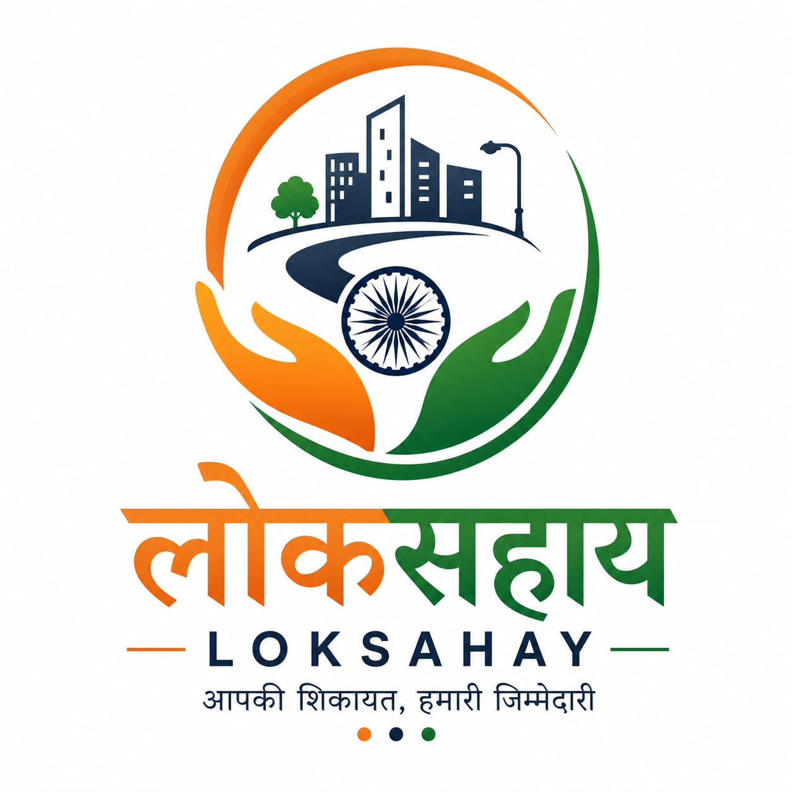

LokSahay ← Back to HomeTrack Your Issue
Enter your complaint ID to check the current progress of your civic issue report.
ISSUE ID: LS-1024
Road Damage Near Main Market
Resolution Progress
Reported
Verified
In Progress
Resolved
CATEGORY
Roads & Potholes
LOCATION
Main Market Area
CURRENT STATUS
Work in Progress
LAST UPDATED
Prototype Data
Check the status of your report
Enter your complaint ID above to view the current progress of your civic issue.